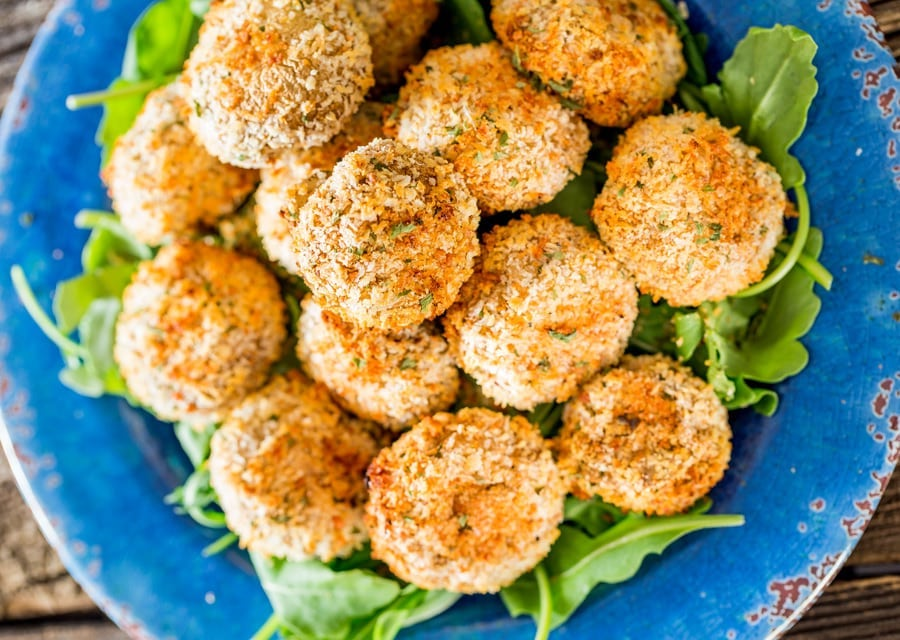

Magical Panko Mushrooms

Description
These divinely inspired, garlicky, parmesan-ey, panko crusted & oven-baked mushrooms don't require a fryer!
Ingredients
- 1 1/4 cup panko breadcrumbs
- 30g parmesan grated
- 1 t garlic powder
- 1/2 t salt
- 1 t black pepper
- 1 T dried parsley
- 1 - 2 eggs depending on size
- 20 mushrooms
Method
- Preheat to 230°C & line baking sheet with parchment paper; set aside.
- In a bowl combine breadcrumbs, salt, pepper, garlic powder, parmesan, & parsley. In a separate bowl, whisk the egg whites.
- Dip each mushroom in egg whites, then roll mushroom through the breadcrumb mixture, & place on baking sheet.
- Bake for 10 – 15 minutes or until golden brown & crispy then serve with ranch dressing, marinara or dipping sauce of your choice!